Webinar
Google Maps - JavaScript API
Big Data, GIS and AngularJS Development Strategies
Kuty Shalev, CEO
Founded Clevertech in 2000, Inc 5000 Awardee.
Grew to 50+ remote developers, designers, and analysts over six continents.
Nazar Aziz, Senior Developer Clevertech
Loves to tackle big-data challenges and celebrates the accomplishment of figuring out a lean solution.
You'll Learn
- Overview of Google Maps API, GIS, public GIS data sources, and a big data case study
- Using AngularJS to build Google Map Components
Before Google Maps
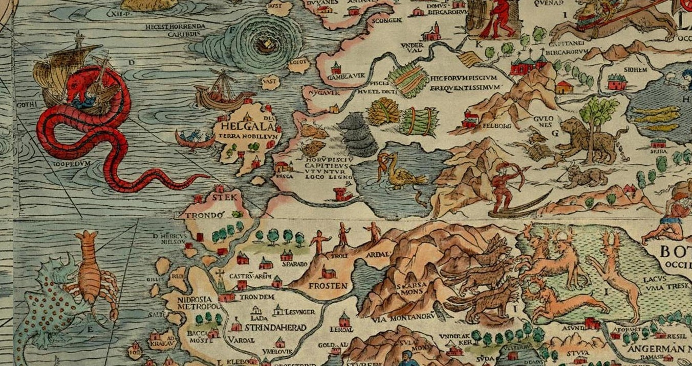
In 2004, enter Keyhole 2 LT
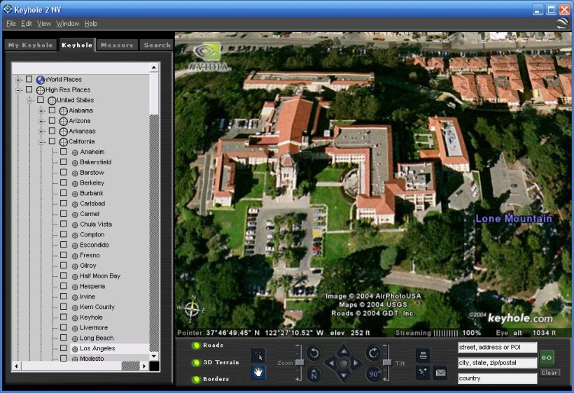
Acquired by Google in 2004, then...In 2005, Google launches Google Maps
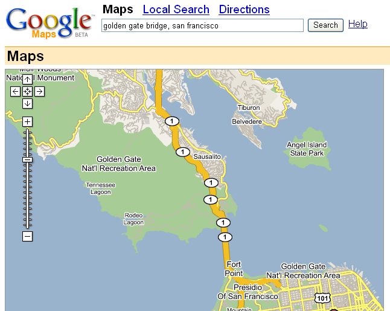
In 2014, Maps are Ubiquitous
2014 - Google Maps
JavaScript API Version 3
- Free for websites with less than 25,000 map loads per day
- Highly customizable: standard control positions, custom controls, styles, etc
Custom Styles
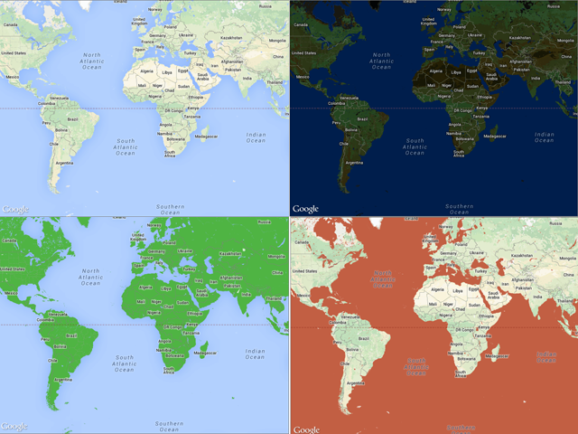
Major API Features
- Mobile
- Overlays
- Layers
- Services
Mobile
- JavaScript v3 API designed for Desktop and Mobile
- Native iOS SDK
- Native Android SDK
Overlays
Marker
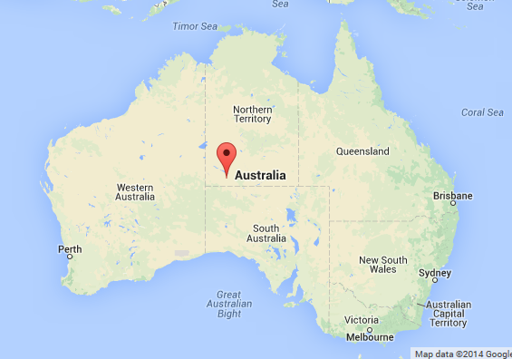
Custom Marker
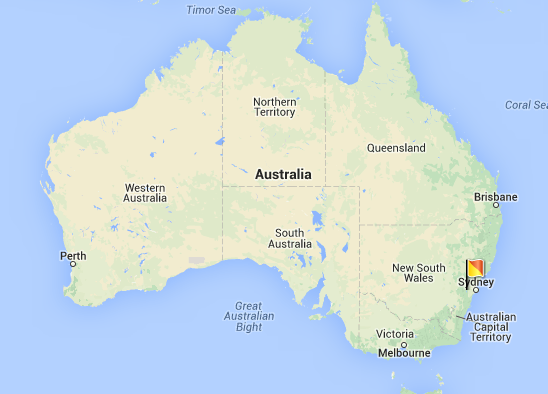
Polyline
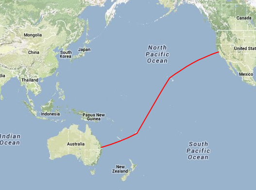
Polygon
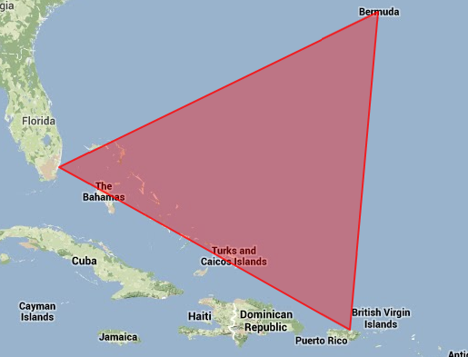
Circle
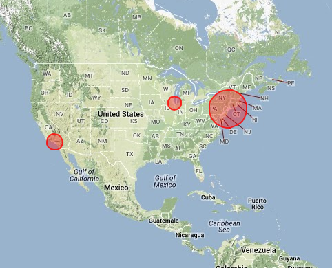
Rectangle
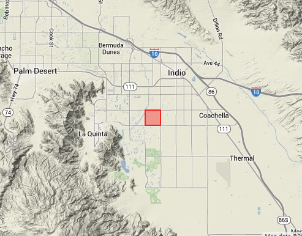
Adjustable Rectangle
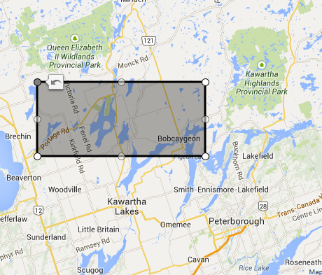
Ground Overlay
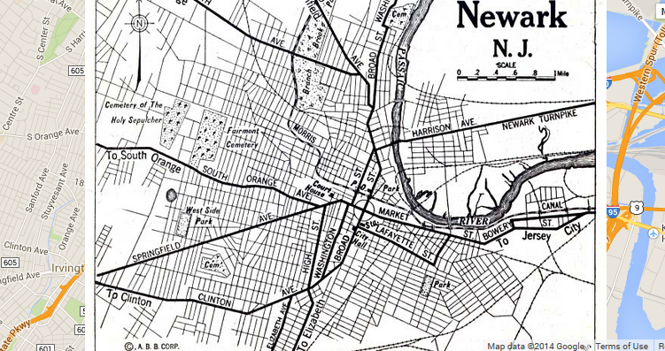
Layers
KML Layer
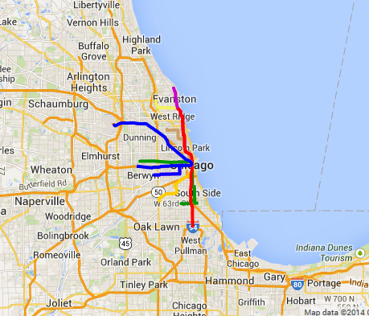
GeoJSON Dynamic Layer

Heatmap

Live Traffic
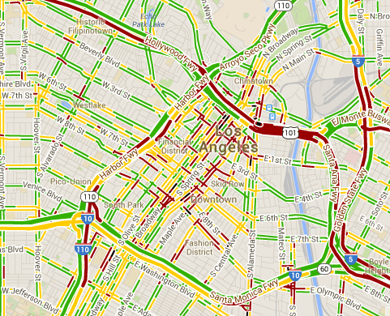
Bicycle Layer
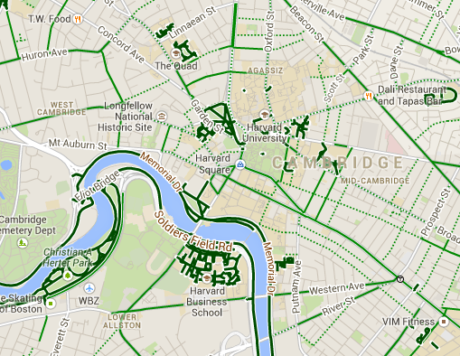
Transit Layer
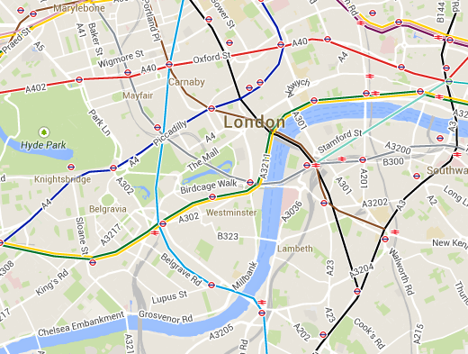
Live Weather
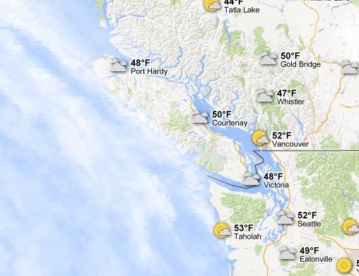
Panoramio
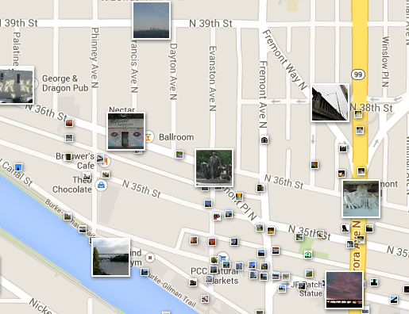
Fusion Tables
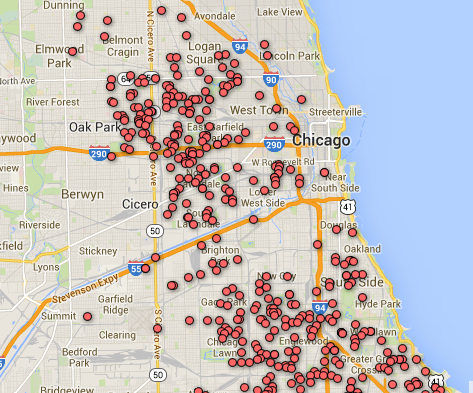
Services
- Geocoding and Reverse Geocoding
- Directions
- Street View
- AdSense via Maps Ad Unit
- Drawing Library
- Plus more
GIS
A Geographic Information System (GIS) is a computer system designed to capture, store, manipulate, analyze, manage, and present all types of geographical data.
London Cholera outbreak

Topography and Geographic Features
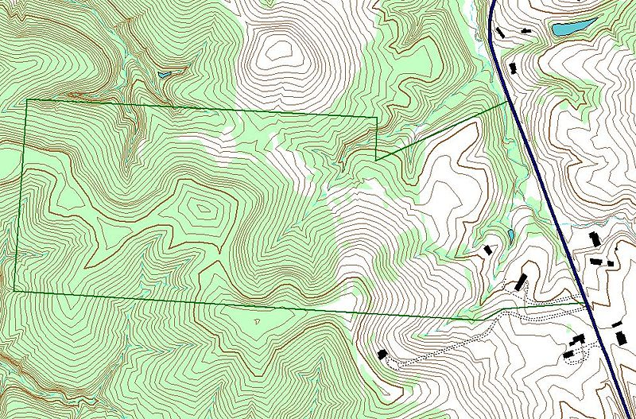
More Examples
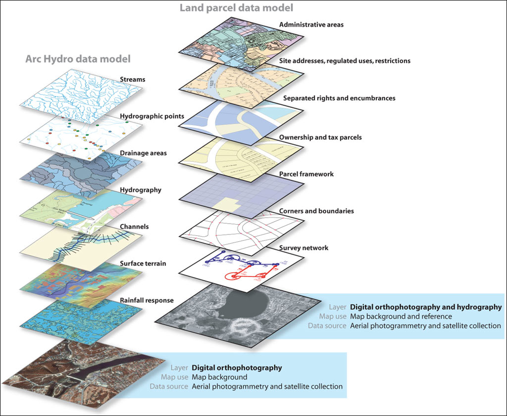
GIS Data Sources
- United States Census Bureau - TIGER Products
- Natural Earth
- Global Map
- Open Topography
- More ...
United States Census Bureau
TIGER Products
Topologically Integrated Geographic Encoding and Referencing
Shape files
Boundaries (i.e state, county, census block), roads, address information, water features, etc...
Geo databases
Boundaries, Population Counts, Housing Unit Counts, 2010 Census Demographic Profile 1 attributes, etc...
Case Study
National Telecoms Provider

Big Data
- 6,000,000 Customers and Prospects
- 7,000,000 Road segments - each segment containing multiple Lat/Lng points - 63,000,000,000 Lat/Lng pairs
- 4,500,000 Cable and Fiber segments - 55,000,000 Lat/Lng pairs
- 700,000 Census Blocks - 51,000,000 Lat/Lng pairs
Bringing it all Together
-
RDBMS - PostgreSQL 9.x
- Fast, free and feature rich
- SQL and NoSQL via HSTORE and JSON data types
- Extensions
-
Geographic Processing - PostGIS 2
- Processing and analytic functions for splicing, dicing, morphing, reclassifying, intersecting, and collecting/unioning with the power of SQL
- Rendering and importing for standard textual formats such as KML,GML, SHP, GeoJSON,GeoHash and WKT using SQL
-
Data Output - GeoJSON
- Natively produced by PostGIS
- Native JavaScript object; requires no serialisation/de-serialisation on either the Server (nodeJS) or the Browser
Data Partitioning
Break down data into geographic partitions
- National View - with Summaries
- State View - with Summaries
- City View - with Summaries
- Asset View
National View
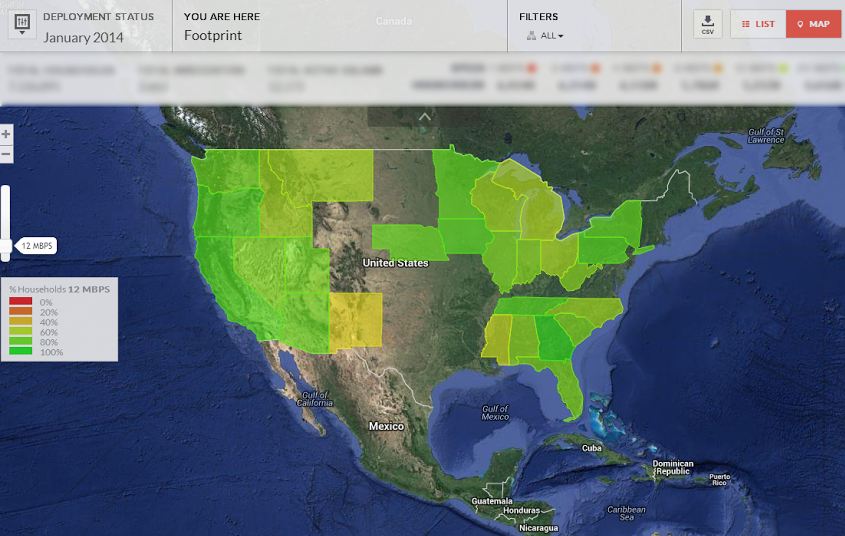
State View
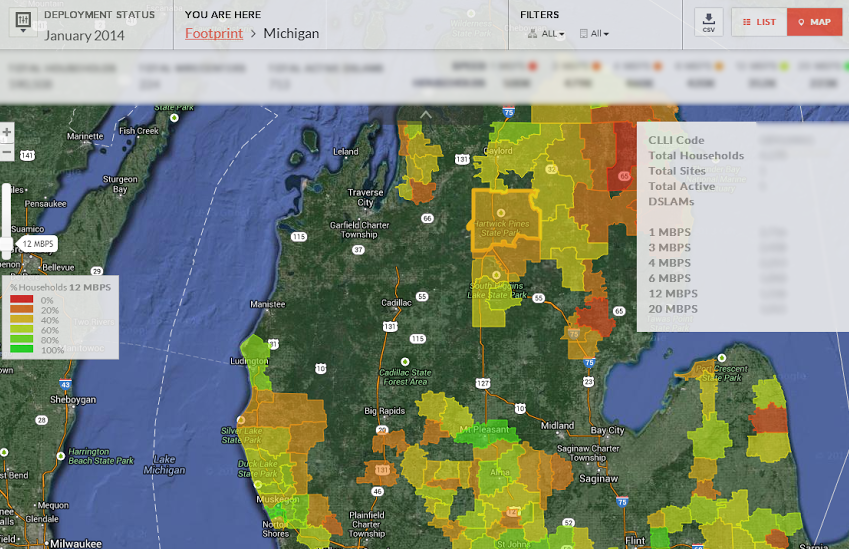
City View
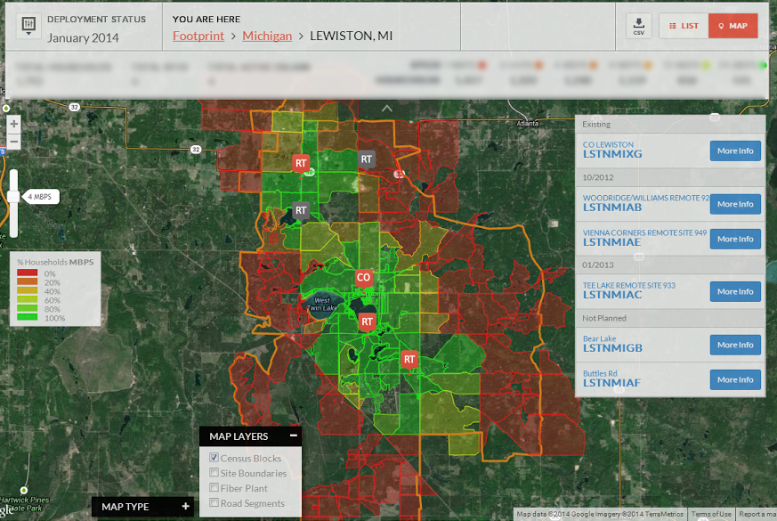
Asset View
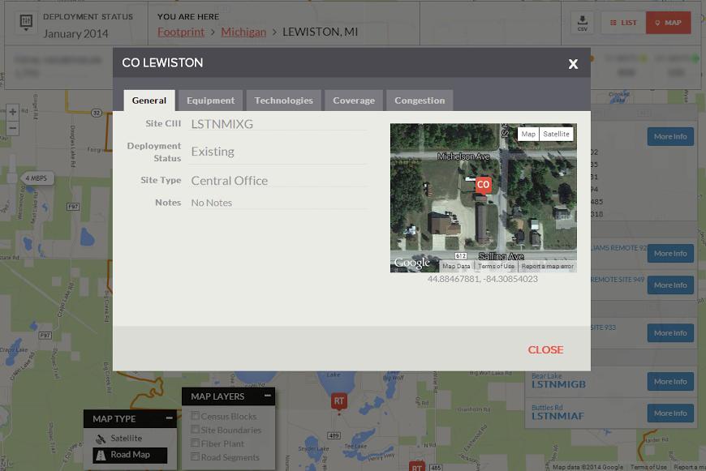
Still Too Much Data!
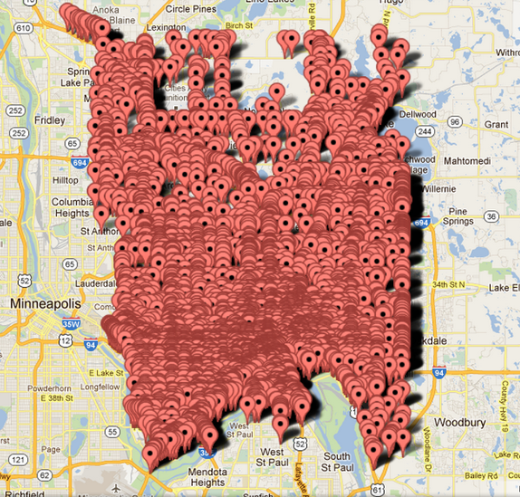
Marker Clustering
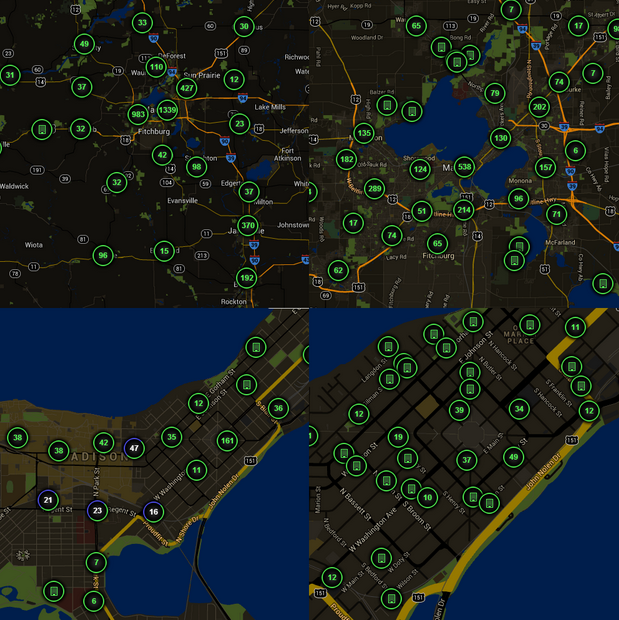
Simplification
Adjust geometry accuracy based on map zoom levels. i.e. simplify road segments at higher zoom.
PostGIS provides the ST_Simplify function to simplify geometry. Simplify.js can do the same on the browser.
Viewport Limiting
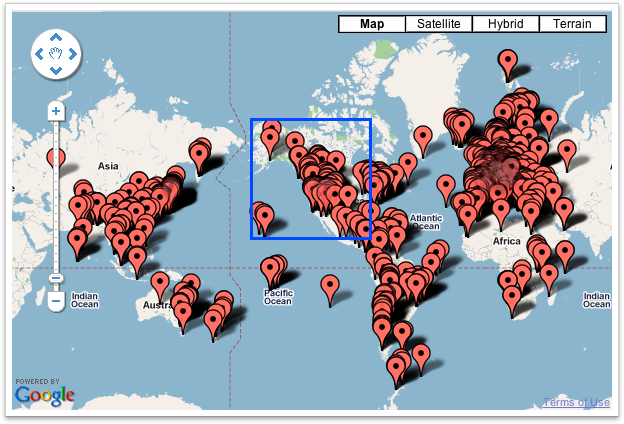Fusion Tables
- Server-side Rendering
- Easily upload and manage data
- Provides an SQL like query interface to uploaded data
- Not suited for large datasets (!> 250MB per table) nor frequently updated data
Google Maps
JavaScript API V3
Implementation Strategies using AngularJS
Initializing a Map
<!DOCTYPE html>
<html>
<head>
<meta name="viewport" content="initial-scale=1.0, user-scalable=no" />
<style type="text/css">
html { height: 100% }
body { height: 100%; margin: 0; padding: 0 }
#map-canvas { height: 100% }
</style>
<script type="text/javascript"
src="https://maps.googleapis.com/maps/api/js?sensor=false">
</script>
<script type="text/javascript">
function initialize() {
var mapOptions = {
center: new google.maps.LatLng(-34.397, 150.644),
zoom: 8
};
var map = new google.maps.Map(document.getElementById("map-canvas"),
mapOptions);
}
google.maps.event.addDomListener(window, 'load', initialize);
</script>
</head>
<body>
<div id="map-canvas"/>
</body>
</html>
Live Map
Adding a Marker
function initialize() {
var myLatlng = new google.maps.LatLng(40.714623,-74.006605);
var mapOptions = {
zoom: 10,
center: myLatlng
}
var map = new google.maps.Map(
document.getElementById('map-canvas'),
mapOptions
);
var marker = new google.maps.Marker({
position: myLatlng,
map: map,
title: 'Hello World!'
});
}
Marker
The Bermuda Triangle
function initialize() {
var mapOptions = {
zoom: 5,
center: new google.maps.LatLng(24.886436490787712, -70.2685546875),
mapTypeId: google.maps.MapTypeId.TERRAIN
};
var bermudaTriangle;
var map = new google.maps.Map(document.getElementById('map-canvas'),
mapOptions);
// Define the LatLng coordinates for the polygon's path.
var triangleCoords = [
new google.maps.LatLng(25.774252, -80.190262),
new google.maps.LatLng(18.466465, -66.118292),
new google.maps.LatLng(32.321384, -64.75737),
new google.maps.LatLng(25.774252, -80.190262)
];
// Construct the polygon.
bermudaTriangle = new google.maps.Polygon({
paths: triangleCoords,
strokeColor: '#FF0000',
strokeOpacity: 0.8,
strokeWeight: 2,
fillColor: '#FF0000',
fillOpacity: 0.35
});
bermudaTriangle.setMap(map);
}
AngularJS
HTML is great for declaring static documents, but it falters when we try to use it for declaring dynamic views in web-applications.
AngularJS lets you extend HTML vocabulary for your application. The resulting environment is extraordinarily expressive, readable, and quick to develop.
HTML Components
HTML Components is a method of creating HTML elements that encapsulate a behaviour and hides specifics internally while exposing a limited number of public interfaces.
An HTML5 video player, for example, hides the complexity of video rendering, streaming, audio synchronisation and only exposes a limited number of interfaces such as: stop, play, pause etc...
HTML5 Video Player - Shadow DOM

HTML/Web Component
Implementations
- Shadow DOM
- Polymer
- Ember.Component
- AngularJS Directives
- X Tags
- Etc...
Define A Declarative HTML Vocabulary
<base-map></base-map>
Or
<div data-base-map></div>
base-map is responsible for instantiating and rendering a basic map and nothing more.
Any drawing, such as rendering Markers, PolyLines etc will be delegated to nested map components.
Base Map Directive
Map Components
Zoom Control
A trivial example that uses the base-map Directive but augments it with a basic Zoom control.
<div data-base-map>
<div data-map-control-zoom></div>
</div>
Zoom Control
Ruler Control
This is a non trivial example that adds a ruler component that displays the distance of a drawn path.
<div data-base-map>
<div data-map-control-ruler></div>
</div>
Ruler Control
Combining Components
Since AngularJS Directives are isolated, they can be combined...
<div data-base-map>
<div data-map-control-zoom></div>
<div data-map-control-ruler></div>
</div>
Combining Zoom and Ruler
Multiple Maps
<div data-base-map>
<div data-map-control-zoom></div>
<div data-map-control-ruler></div>
</div>
<div data-base-map>
<div data-map-control-zoom></div>
<div data-map-control-ruler></div>
</div>
<div data-base-map>
<div data-map-control-zoom></div>
<div data-map-control-ruler></div>
</div>
<div data-base-map>
<div data-map-control-zoom></div>
<div data-map-control-ruler></div>
</div>
Multiple Maps
Big Picture
- Encapsulate map and business data into components
- Greater re-use and per view customisations
- Write less code
Compound Component View - HTML
<div id="route-map">
<div data-ng-include="partial('navbar')"></div>
<div data-filter-bar=""
data-visible-buttons="visibleButtons"
data-toggled-buttons="toggledButtons"
data-loading-buttons="loadingButtons"
data-on-click-button="toggleLayer(layer, active)"
>
</div>
<div data-list-businesses=""
data-buildings="buildings"
data-business-type="prospects"
data-on-click-business="clickBusiness(id)"
data-selectable="true"
>
</div>
<div data-map=""
>
<div data-map-marker-buildings=""
data-buildings="buildings"
data-info-window-template-url=" info/prospect-building-info "
>
</div>
<div data-map-marker-splices=""
data-splice-points="splicePoints"
>
</div>
<div data-aro-map-heat-opportunity=""
data-opportunity="opportunity"
>
</div>
</div>
</div>
Questions?
Need a Google Maps application?
 @kuty
@kuty